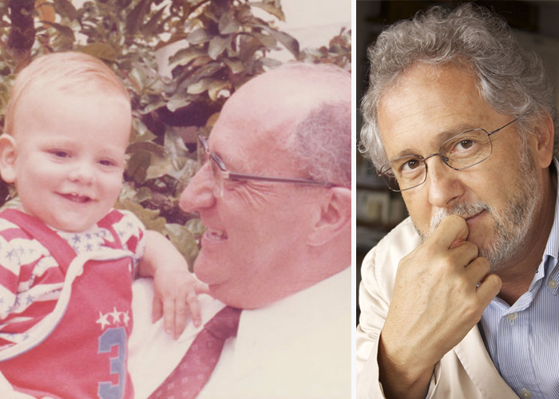
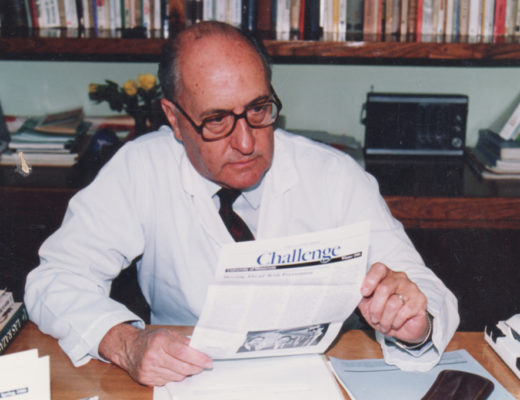

El médico Héctor Abad Gómez dedicó sus últimos años, hasta el mismo día en que cayó asesinado en pleno centro de Medellín, a la defensa de la igualdad social y los derechos humanos. El olvido que seremos es la reconstrucción amorosa y paciente de un personaje; está lleno de sonrisas y canta el placer de vivir, pero muestra también la tristeza y la rabia que provoca la muerte de un ser excepcional.
Según recuerda su hijo, este médico que le dio la vida y, pese a haber sido una figura respetada, terminó asesinado por los paramilitares, luchó, hasta el mismo día de su muerte, por la igualdad social y no se cansó de defender los derechos humanos porque estaba convencido de que la esencia de todas las criaturas de su especie es buena y que, por lo tanto, a través de la palabra era posible que recuperasen su bondad.
Por la temática abordada y la forma que eligió Abad Faciolince para describir al protagonista de esta historia, no son pocos los lectores que se conmueven al leer este libro. «El olvido que seremos» no sólo rescata buenos momentos, sino que también reserva un espacio para los recuerdos más tristes y hasta para criticar las virtudes de este profesional de la salud que, según su hijo, tenía una «confianza excesiva en el ser humano y defendía con furia las reivindicaciones sociales de la izquierda», tal como reproduce «Página/12».
Según confesó el novelista en el marco de una entrevista con el citado diario argentino, este material literario nació de una necesidad personal y familiar. Héctor Abad Faciolince quería contarle al mundo quién fue su padre, pero también documentar su relato con hechos que no salieron de su imaginación, sino que ocurrieron en la vida real y le permitieron, además de reconstruir la vida de su progenitor, construir un retrato de la sociedad colombiana.
| Capítulo | Narrado en: |
|---|---|
| 1 | Primera persona |
| 2 | Primera persona |
| 3 | Primera persona |
| 4 | Primera persona |
| 5 | Primera persona |
| 6 | Primera persona |
| 14 | Primera persona |
| 15 | Primera persona |
| 16 | Primera persona |
| 18 | Primera persona |
| 19 | Primera persona |
| 22 | Primera persona |
| 23 | Primera persona |
| 24 | Primera persona |
| 25 | Primera persona |
| 26 | Primera persona |
| 29 | Primera persona |
| 31 | Primera persona |
| 33 | Primera persona |
| 34 | Primera persona |
| 37 | Primera persona |
| 40 | Primera persona |
| 41 | Primera persona |
| 42 | Primera persona |
| 7 | Segunda persona |
| 8 | Segunda persona |
| 9 | Segunda persona |
| 10 | Segunda persona |
| 11 | Segunda persona |
| 12 | Segunda persona |
| 13 | Segunda persona |
| 17 | Segunda persona |
| 20 | Segunda persona |
| 21 | Segunda persona |
| 27 | Segunda persona |
| 28 | Segunda persona |
| 30 | Segunda persona |
| 32 | Segunda persona |
| 35 | Segunda persona |
| 36 | Segunda persona |
| 39 | Segunda persona |
Has click aquí para comprar el libro